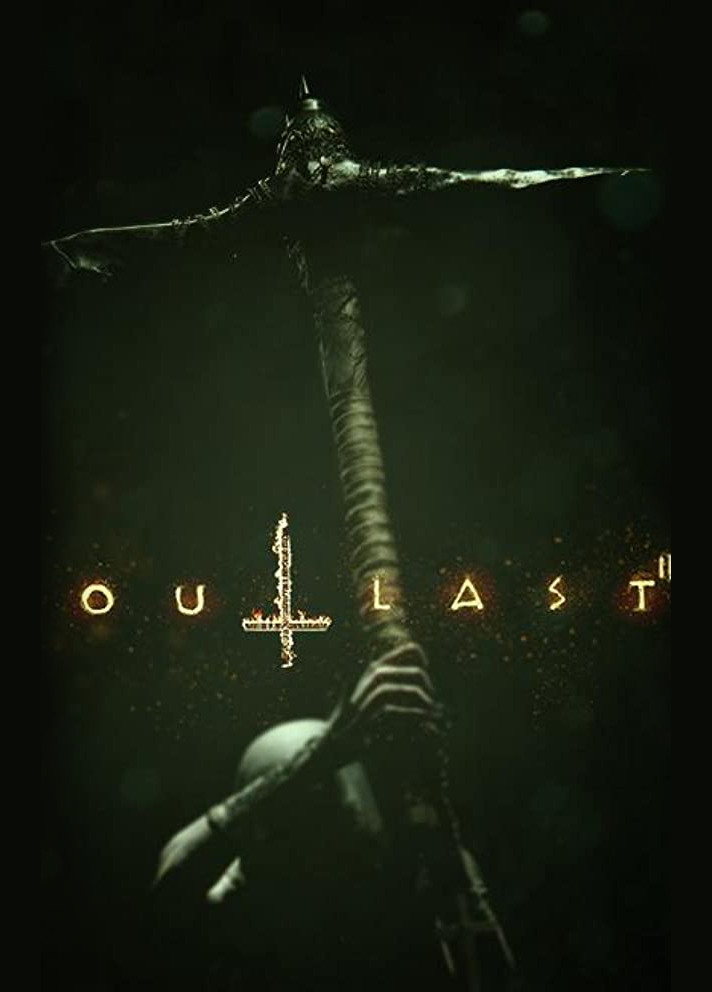
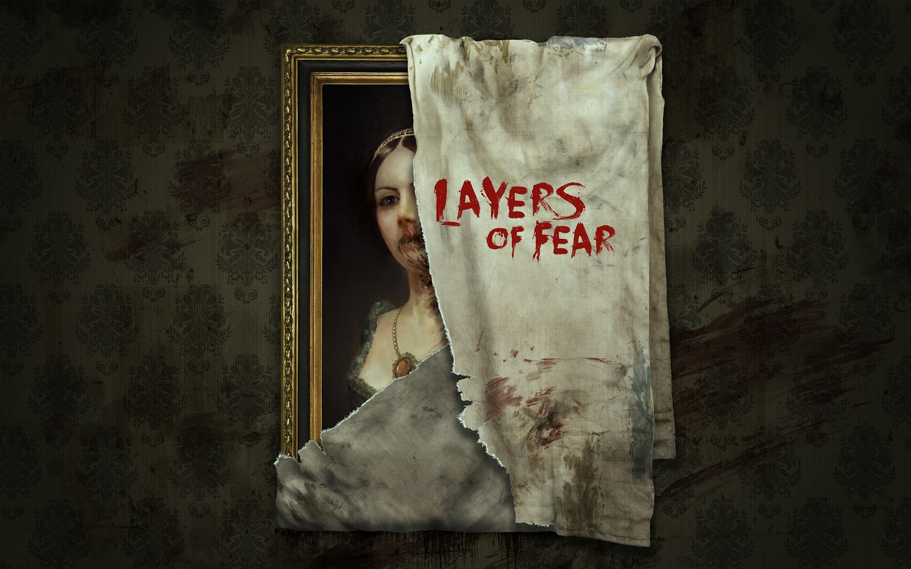
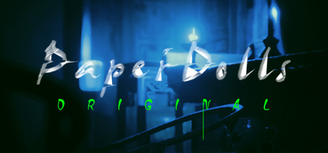

Games You Should Try
Outlast 1&2
Nothing can better represent good horror games than Outlast series. It was good not only because of its scene development but also its gameplay. Players are often facing a challenge and scary stuff under darkness and unknown places, always have to be aware of what might come out of darkness to kill them. The game not only using the very precise calculated time to jump-scare players but also use its background music and environment to build the terror from the player’s heart. Both series contain very deep background stories. It is an amazing game to enjoy.
Layers of Fear
if you ask me what is the most amazing psychological horror game I’ve ever played, I would like to introduce the Layers of Fear. The game used the best technique to build the fear without any existence of monsters or scary creatures. Players are controlling a drunk genius painter and exploring his house in his dream and nightmare to establish what happened to his family. The way it uses its background music to scare players is the best out of all the horror games I’ve ever played. It is also a great game for starters to enjoy the greatness of horror games.
Paper Doll
Scare is a common feeling that existed in our society. So what are things that people from different cultures are afraid of? Paper Doll is a Chinese horror game that takes place in a big family in the Qing dynasty. Players are representing the reincarnation of the hostess, accidentally walked into the old house and trying to figure out the unjust case that happened hundreds of years ago. It was a great game to establish a different culture around the world.
